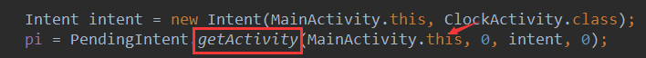

一、本节引言：
本节带来的Android中的AlarmManager(闹钟服务)，听名字我们知道可以通过它开发手机闹钟类的APP， 而在文档中的解释是：在特定的时刻为我们广播一个指定的Intent，简单说就是我们自己定一个时间， 然后当到时间时，AlarmManager会为我们广播一个我们设定好的Intent，比如时间到了，可以指向某个 Activity或者Service！另外官方文档中有一些要注意的地方：
另外要注意一点的是，AlarmManager主要是用来在某个时刻运行你的代码的，即时你的APP在那个特定 时间并没有运行！还有，从API 19开始，Alarm的机制都是非准确传递的，操作系统将会转换闹钟 ，来最小化唤醒和电池的使用！某些新的API会支持严格准确的传递，见 setWindow(int, long, long, PendingIntent)和setExact(int, long, PendingIntent)。 targetSdkVersion在API 19之前应用仍将继续使用以前的行为，所有的闹钟在要求准确传递的情况 下都会准确传递。更多详情可见官方API文档：AlarmManager
二、Timer类与AlarmManager类区别：
如果你学过J2SE的话，那么你对Timer肯定不会陌生，定时器嘛，一般写定时任务的时候 肯定离不开他，但是在Android里，他却有个短板，不太适合那些需要长时间在后台运行的 定时任务，因为Android设备有自己的休眠策略，当长时间的无操作，设备会自动让CPU进入 休眠状态，这样就可能导致Timer中的定时任务无法正常运行！而AlarmManager则不存在 这种情况，因为他具有唤醒CPU的功能，可以保证每次需要执行特定任务时CPU都能正常工作， 或者说当CPU处于休眠时注册的闹钟会被保留(可以唤醒CPU)，但如果设备被关闭，或者重新 启动的话，闹钟将被清除！(Android手机关机闹钟不响...)
三、获得AlarmManager实例对象：
AlarmManager alarmManager = (AlarmManager) getSystemService(ALARM_SERVICE);
四、相关方法讲解：
- set(int type,long startTime,PendingIntent pi)：一次性闹钟
- setRepeating(int type，long startTime，long intervalTime，PendingIntent pi)： 重复性闹钟,和3有区别,3闹钟间隔时间不固定
- setInexactRepeating（int type，long startTime，long intervalTime,PendingIntent pi）： 重复性闹钟，时间不固定
- cancel(PendingIntent pi)：取消AlarmManager的定时服务
- getNextAlarmClock()：得到下一个闹钟，返回值AlarmManager.AlarmClockInfo
- setAndAllowWhileIdle(int type, long triggerAtMillis, PendingIntent operation) 和set方法类似，这个闹钟运行在系统处于低电模式时有效
- setExact(int type, long triggerAtMillis, PendingIntent operation)： 在规定的时间精确的执行闹钟，比set方法设置的精度更高
- setTime(long millis)：设置系统墙上的时间
- setTimeZone(String timeZone)：设置系统持续的默认时区
- setWindow(int type, long windowStartMillis, long windowLengthMillis, PendingIntent operation)： 设置一个闹钟在给定的时间窗触发。类似于set，该方法允许应用程序精确地控制操作系统调 整闹钟触发时间的程度。
关键参数讲解：
- Type(闹钟类型)： 有五个可选值: AlarmManager.ELAPSED_REALTIME: 闹钟在手机睡眠状态下不可用，该状态下闹钟使用相对时间（相对于系统启动开始），状态值为3; AlarmManager.ELAPSED_REALTIME_WAKEUP 闹钟在睡眠状态下会唤醒系统并执行提示功能，该状态下闹钟也使用相对时间，状态值为2； AlarmManager.RTC 闹钟在睡眠状态下不可用，该状态下闹钟使用绝对时间，即当前系统时间，状态值为1； AlarmManager.RTC_WAKEUP 表示闹钟在睡眠状态下会唤醒系统并执行提示功能，该状态下闹钟使用绝对时间，状态值为0; AlarmManager.POWER_OFF_WAKEUP 表示闹钟在手机关机状态下也能正常进行提示功能，所以是5个状态中用的最多的状态之一，该状态下闹钟也是用绝对时间，状态值为4；不过本状态好像受SDK版本影响，某些版本并不支持；
- startTime：闹钟的第一次执行时间，以毫秒为单位，可以自定义时间，不过一般使用当前时间。 需要注意的是,本属性与第一个属性（type）密切相关,如果第一个参数对应的闹钟使用的是相对时间 （ELAPSED_REALTIME和ELAPSED_REALTIME_WAKEUP），那么本属性就得使用相对时间 （相对于系统启动时间来说）,比如当前时间就表示为:SystemClock.elapsedRealtime()； 如果第一个参数对应的闹钟使用的是绝对时间(RTC、RTC_WAKEUP、POWER_OFF_WAKEUP）, 那么本属性就得使用绝对时间，比如当前时间就表示 为：System.currentTimeMillis()。
- intervalTime：表示两次闹钟执行的间隔时间,也是以毫秒为单位.
- PendingIntent：绑定了闹钟的执行动作，比如发送一个广播、给出提示等等。 PendingIntent是Intent的封装类。需要注意的是，如果是通过启动服务来实现闹钟提 示的话，PendingIntent对象的获取就应该采用Pending.getService (Context c,int i,Intent intent,int j)方法；如果是通过广播来实现闹钟 提示的话，PendingIntent对象的获取就应该采用 PendingIntent.getBroadcast (Context c,int i,Intent intent,int j)方法；如果是采用Activity的方式来实 现闹钟提示的话，PendingIntent对象的获取就应该采用 PendingIntent.getActivity(Context c,int i,Intent intent,int j)方法。 如果这三种方法错用了的话，虽然不会报错，但是看不到闹钟提示效果。
五、使用示例：一个简单的定时任务
要说的是，此例子只在Android 4.4以下的系统可行，5.0以上并不可行，后续如果有5.0 以上AlarmManager的解决方案，到时再补上！另外，这里用set方法可能有点不准，如果要 更精确的话可以使用setExtra()方法来设置AlarmManager!
运行效果图：
实现代码：
首先一个简单的布局文件:activity_main.xml，另外在res创建一个raw文件夹，把音频文件丢进去！ 另外创建一个只有外层布局的activity_clock.xml作为闹钟响时Activity的布局！没东西，就不贴了
<LinearLayout xmlns:android="http://schemas.android.com/apk/res/android"
android:id="@+id/LinearLayout1"
android:layout_width="match_parent"
android:layout_height="match_parent"
android:orientation="vertical">
<Button
android:id="@+id/btn_set"
android:layout_width="wrap_content"
android:layout_height="wrap_content"
android:text="设置闹钟" />
<Button
android:id="@+id/btn_cancel"
android:layout_width="wrap_content"
android:layout_height="wrap_content"
android:text="关闭闹钟"
android:visibility="gone" />
</LinearLayout>
接着是MainActivity.java，也很简单：
public class MainActivity extends AppCompatActivity implements View.OnClickListener{
private Button btn_set;
private Button btn_cancel;
private AlarmManager alarmManager;
private PendingIntent pi;
@Override
protected void onCreate(Bundle savedInstanceState) {
super.onCreate(savedInstanceState);
setContentView(R.layout.activity_main);
bindViews();
}
private void bindViews() {
btn_set = (Button) findViewById(R.id.btn_set);
btn_cancel = (Button) findViewById(R.id.btn_cancel);
alarmManager = (AlarmManager) getSystemService(ALARM_SERVICE);
Intent intent = new Intent(MainActivity.this, ClockActivity.class);
pi = PendingIntent.getActivity(MainActivity.this, 0, intent, 0);
btn_set.setOnClickListener(this);
btn_cancel.setOnClickListener(this);
}
@Override
public void onClick(View v) {
switch (v.getId()){
case R.id.btn_set:
Calendar currentTime = Calendar.getInstance();
new TimePickerDialog(MainActivity.this, 0,
new TimePickerDialog.OnTimeSetListener() {
@Override
public void onTimeSet(TimePicker view,
int hourOfDay, int minute) {
//设置当前时间
Calendar c = Calendar.getInstance();
c.setTimeInMillis(System.currentTimeMillis());
// 根据用户选择的时间来设置Calendar对象
c.set(Calendar.HOUR, hourOfDay);
c.set(Calendar.MINUTE, minute);
// ②设置AlarmManager在Calendar对应的时间启动Activity
alarmManager.set(AlarmManager.RTC_WAKEUP, c.getTimeInMillis(), pi);
Log.e("HEHE",c.getTimeInMillis()+""); //这里的时间是一个unix时间戳
// 提示闹钟设置完毕:
Toast.makeText(MainActivity.this, "闹钟设置完毕~"+ c.getTimeInMillis(),
Toast.LENGTH_SHORT).show();
}
}, currentTime.get(Calendar.HOUR_OF_DAY), currentTime
.get(Calendar.MINUTE), false).show();
btn_cancel.setVisibility(View.VISIBLE);
break;
case R.id.btn_cancel:
alarmManager.cancel(pi);
btn_cancel.setVisibility(View.GONE);
Toast.makeText(MainActivity.this, "闹钟已取消", Toast.LENGTH_SHORT)
.show();
break;
}
}
}
然后是闹铃页面的ClockActivity.java：
/**
* Created by Jay on 2015/10/25 0025.
*/
public class ClockActivity extends AppCompatActivity {
private MediaPlayer mediaPlayer;
@Override
public void onCreate(Bundle savedInstanceState) {
super.onCreate(savedInstanceState);
setContentView(R.layout.activity_clock);
mediaPlayer = mediaPlayer.create(this,R.raw.pig);
mediaPlayer.start();
//创建一个闹钟提醒的对话框,点击确定关闭铃声与页面
new AlertDialog.Builder(ClockActivity.this).setTitle("闹钟").setMessage("小猪小猪快起床~")
.setPositiveButton("关闭闹铃", new DialogInterface.OnClickListener() {
@Override
public void onClick(DialogInterface dialog, int which) {
mediaPlayer.stop();
ClockActivity.this.finish();
}
}).show();
}
}
代码非常简单，核心流程如下：
- AlarmManager alarmManager = (AlarmManager) getSystemService(ALARM_SERVICE); 获得系统提供的AlarmManager服务的对象
- Intent设置要启动的组件: Intent intent = new Intent(MainActivity.this, ClockActivity.class);
- PendingIntent对象设置动作,启动的是Activity还是Service,又或者是广播! PendingIntent pi = PendingIntent.getActivity(MainActivity.this, 0, intent, 0);
- 调用AlarmManager的set( )方法设置单次闹钟的闹钟类型,启动时间以及PendingIntent对象! alarmManager.set(AlarmManager.RTC_WAKEUP,c.getTimeInMillis(), pi);
另外假如出现闹铃无效的话，你可以从这些方面入手：
- 系统版本或者手机，5.0以上基本没戏，小米，自行百度吧~
- ClockActivity有注册没？
- 假如你用的是alarmManager发送广播，广播再激活Activity的话，则需要为Intent设置一个flag： i.setFlags(Intent.FLAG_ACTIVITY_NEW_TASK);

这些地方没写错吧~别把getActivity写成了getService等哦~
另外，关于AlarmManager结合后来Service实现定时后台任务的例子，可见： 5.2.2 Service进阶
六、代码示例下载：
七、本节小结：
好的，本节跟大家讲解了Android中的AlarmManager(闹钟服务)的使用，除了可以像例子那样定制 一个自己的闹钟，也可以结合Service，Thread来完成轮询等，用法多多，还需各位自行探究，嗯 本节就到这里，谢谢~